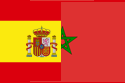
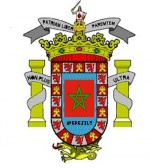

Melilla
 De: La Frikipedia, la enciclopedia extremadamente seria.
De: La Frikipedia, la enciclopedia extremadamente seria.
| De la serie ciudades del mundo:
|
| Melilla
|
| 
|

|
| (Bandera)
|
(Escudo de armas)
|
|
| Topónimo oficial
|
Rusadir, Mrich, La España Africana.
|
| País
|
No está claro: España, Marruecos o Argelia.
|
| Código postal
|
5200X (X depende del barrio donde vivas: Centro Prehistórico, Real Verdadero, Barrio Victoria de la Derrota, Paseo Morítimo, Cañada de la Muerte (este no ha sido modificado...), entre unos pocos +....
|
| Superficie
|
Llena de moritos.
|
| Altitud
|
0 m en la playa y 1 m en el interior.
|
| Distancia
|
Para quien no sepa la historia.... fíjate si fueron tontos los españoles, que en aquellos tiempos (hace 500 años)aceptaron marcar los límites de la ciudad con un cañón, el mierda de cañón solo llegó asta 12 Km(una ratonera), por eso la ciudad son sólo 12 Km. cuadrados... que vergüenza... Por cierto la pistolita esta expuesta como bonito recuerdo en algún sitio de la ciudad, a quién se le ocurre!!!
|
| Fundación
|
1500 d.C.
|
| Población
|
Moros principalmente, también chimejos y algunos españoles.
|
| Gentilicio
|
Melillero, Meliquís, MoroMierda, Marrollenses...
|
| Alcalde
|
No hay por miedo a las represalias. En su lugar, hay una dictadura
|
| Lugar donde se inventó el salto con pértiga.
|
Ciudad autónoma del norte de África bajo la soberanía de España situada al sur de Bilbao. Para ver mejor las fotos y escudos pincha en ellas.
Política
Melilla es una ciudad de moritos muy inestable políticamente. Existe un fuerte movimiento independentista cuyos miembros no quieren formar parte de España, sino que se sienten africanos. Pretenden unirse a Guinea o algún otro país africano.
Existe un grupo terrorista que todos los domingos tira huevos a la casa del alcalde.
Ha recibido 20 medallas al mérito a la ciudad más parecida a Springfield de los Simpsons, pero sin puta gracia.
Está claro que Imbroda es el alcade Quimby y "Papa Eñe" es Krusty el payaso. El Sr. Burns (Central nuclear) es pariente lejano de Gustavo Cabanillas (Gaselec).
Costumbre milenarias melillenses
- Arrancar los buzones de correos y venderlos en el magreb. Una industria emergente.
- Ponerle un mote a un colega, ya que lo tienes tu...o todos moros o todos cristianos.
- Beber leche agria del magreb que te infecta las cervicales con bacterias que te comen el hueso (verídico).
- Estudiar aunque sea el primer año de carrera en la denominada 2ª Melilla, si si la ciudad de Granada.
- Aguantar magrebías con aspiraciones a afros escuchando "dame más gasolina" mientras visten de verde fosforito y les chillan a las "perras" que se "enchinen".
- No llegar al Bachiller.
- Intentar aquellos que no tienen el Plus o parabolica pirata,ver los partidos en un bar y si acaso consumir una cocacola.
- Quedar en el ZARA o en el STRADIVARIUS(este solo si eres pija).
- Tener una moto de 49cc trucada.
- Ir a la bocana...(la playa marroquí + cercana a melilla, que cada vez esta + saturada)... en verano, ya que la playa de melilla es un riesgo: en la arena puedes encontrar pinchos de las barbacoas que los jóvenes suelen hacer para sentirse + guays y adultos, y en el agua no te quiero ni contar... desde pequeñas medusas maléficas de esas de aparición causada por el calentamiento global del planeta, hasta compresas, tampones, condones, peces muertos, e incluso regalitos flotantes que dejan algunos que parece ser no conocen lo que es un baño (con suerte puedes ver como un tonto los coge pensando k son una piedra o una pelota...)
- El alcalde de la ciudad es atracado mientras sale del restaurante pagado con los impuestos públicos.
- Comprar todo el doble de caro, porque está establecido así.
- Ver como 2 niños ayudan a un hombre y a su cabra a arrancar la moto en la que los 2 se desplazan
- Sentarse en un punto y agredir e insultar a todo aquel que pase. Si eres menor y de origen magrebí ("chascal") lo más seguro es que te recompensen.
- Tener enchufado todo el día el ordenador.
- Comprar DVD...piratas en el rastro o si tienes ordenador bajártelo del Ares.
- Destrozar los coches de los que usan intermitentes y aparcan en permitido. Y rayárselo aunque sea una mierda de coche que no merece ni la pena.
- Denunciar a la policía a todo aquel que concibe un fin de semana sin ir a la discoteca a liarse con los yangos a navajazos y a reventarse los oídos con el de los serrano.¿Qué se han creído, que pueden estar de billares en plan guay?
- Fumar porros. ¿Creías que no lo iba a mencionar?
- Comprar todo terrenos. Nadie que se precie se puede aventurar a estar en Melilla sin un todo terreno. Consumen de la hostia y nunca vas a ir al campo. Pero que no se diga que la tienes chica.
- La feria de Melilla. Incluso cuando la novata Roma daba sus primeros tumbos como gran nación emergente, la Feria de Melilla ya existía. Y ha permanecido sin inmutarse desde entonces. Vea como las mismas "atracciones" vienen sin variación alguna cada año, desafiando las leyes de la probabilidad y de la física, sin producir ningún herido. Deleitese con las anotaciones "yo estuve aquí" (1512) y "por favor, paren esto" (1492). Continúe con la tradición de comer en los puestos de comidas, desafiando al destino y a las bacterias comiendo platos hechos con productos de hace 2 semanas, expuestos al sol y calor estival. Pague todo al triple de precio ¿Dónde si no puede encontrar viejas gordas borrachas vestidas de sevillanas acaloradas dando tumbos, y casetas morunas en las que las fachadas están plagadas de navajas clavadas y vómito y sangre secos? No deje de comer los algodones dulces rancios y participe en los coches de choque, en los que si no sale escupido, insultado en 3 idiomas, pateado y arañado, le devolvemos el importe del ticket más indemnización por daños morales y angustia mental.
- Ir gritando a todas las mujeres (rubias o no): "RUBIIIIIAAA!!! AGASH VEN VEN! ARAHANDAURO!!! AGAAAASH QUI TI VI A DEJA EL TAGNA COMO LA BANDERA DE JAPON! TFÚ!!! VEN NA MA KI TI VA A DA MASISOOOOOO!!!"
- Para integrarte entre su población debes aprender un vocabulario muy difícil basado en dos frases "ya teeee digo","ya teeee vale" y "en plan" son claves.
- Es normal esperar una hora para que te hagan una pizza o un sandwich a diferencia de en la Península, donde 20 minutos es lo normal.
- Ser metopa solo para sacarte los carnés y acabar siendo cabo.
- Ser magrebí y echar peste.
- Ver negros y Apus a mansalva.
- Cortar mármol en medio de la calle.
- Intentar entrar en cualquier intento frustrado de discoteca de Melilla (porque solo hay 1) y que te digan que no puedes entrar por lo jodíamente feo que eres.
- Vender zapatillas de deporte originales (compradas en Marruecos) por eBay
- Ver muchos Apus en los locutorios, o tambien llamados badulaques.
- Ver mercedes como si fueran una plaga.
- Pararse enfrente del multicines (que tiene tres salas) con el coche, cortando el tráfico para ver la cartelera,la gente pita y se queja pero cuando consiguen abanzar, vuelven a parar para mirar la dichosa cartelera.
- Concentrarse entorno al Burguer King como si la carne de perro de las hamburguesas los atrayesen.
- Matar a palos a un moro y que te traiga a sus primos, hermanos, padre y diversas madres, abuelos, perros, gatos, etc para que te maten.
- Estudiar magisterio e ir al paro en consecuencia(algunos tienen suerte y acaban en burguer king).
- Estar bajo un techo con gorra gafas de sol, sin camiseta y riñonera mientras miras desesperado por follar como un animal a las niñas
- Tardar unas 14 horas en cruzar la frontera en domingo para comer "pescado" en Nador y ahorrarte la friolera de 1 leuro.
- Sacar garrafas de plástico a pasear.
- Dar rules con el coche de una punta a otra como idiotas.
- Ir a la playa solo y no vigilar mientras tanto tu ropa, aunque eso de lo mismo.
- Ir a la discoteca.
- Conducir.
- Ir a echar un billar.
- Ir de putas.
- Gritar "VIVA CAÑADA" en Las Minas, y viceversa.
- Subir a Cabrerizas con cadenas de plata u oro por fuera de la camiseta.
- Ser mujer.
- Decir que no le dejas un leuro a un yango, "qui ti pasa? te kree mo listo to no? tfúuu!!! aksh payito ya verá, ya verá..."
- No ser musulman
- Ser profesor de instituto.
- Ser alumno.
- Ser persona.
- Acercarse a un yango que te diga: "Agash, ven ven..."
- Ir a la cabalgata de los reyes magos y que tiren caramelos; los yangos vuelan y dan codazones , y si les es necesario dan la vida por un caramelo.
- Ir a pedir papeles al ayuntamiento.
- Abrir un comercio (de cualquier tipo).
- Ser Cristiano (aromi) o Judío.
- Ser un alto cargo militar.
- Ser policía local, a un yango siempre lo tienes que perdonar la primera vez si lo pillas sin casco.
- Comprarse un coche, tunearlo al máximo y pasearte durante 3 o 4 horas diarias por toda la ciudad, no importa donde vallas pero que tu música (de mierda, preferentemente) se oiga.
- Ir a la feria.
- Ir al IES Huerta Salama
- Ponerse el casco
- Acercarse a el ex-guardia civil chiflado que diambula por la ciudad
- Beber agua de las fuentes publicas
- No tener hermanos mayores.
- Jugar al fútbol, aunque sea entre amigos y mas si hay apuestas(normalmente quien pierde paga el campo).
- Colarse en IES enrique nieto o colegio velazquez, para ello tienes que estar en perfectas condiciones físicas y por supuesto no tener hemorroides.
- Darte un chapuzón en la ALCAZABA o en la BOCA DEL LEÓN, lugar de encuentro de los mayores peligros por metro cuadrado.
- No tener la piel color caqui o marrón.
- No oler a pescado crudo con queso y sudor (ya me entendeis)
Qué ver...
- No te puedes perder "Los pinos" lugar de encuentro melillense donde mínimo, 1000 veces en la vida, hay que ir a fumarse un porro o echar un polvo. (Aunque todo el mundo lo niega)
- Entre los monumentos más visitados destaca el DIQUE SUR, sus preciosas vistas a la valla, el ambiente marroquí debido al alto número de vehículos aparcados de esta procedencia y la interesante destreza de los famosos comedores de pipas, hace que este lugar mágico sea visitado por millares de melillenses cada fin de semana. Ocasionalmente algún velero o barco encalla formándose largas caravanas.
- Un lugar emblemático es sin duda su CENTRO MODERNISTA ya que con suerte puedes observar como los famosos pícaros rompen papeleras, revientan farolas, escupen al suelo y orinan en los portales reviviendo la Melilla de 1500.
- No hay que olvidarse de ese magnífico hombre que da su bienvenida a todo melillense o turista que se atreva a venir a la ciudad y que será también, este estadista sin igual, el que te despida. Efectivamente amiguetes, se trata de Francisco Paulino Hermenegildo Teódulo FRANCO Bahamonde, ya que en este "sol de España en África" aún queda una estatua de tan insigne persona que cuenta con el beneplácito de las autoridades locales y con el de Doña Carmen, a la que podemos ver asistiendo a todo acto semicultural que se celebra en la ciudad. En Navidad los del puerto le ponen una bufanda roja y un gorrito de Papá Noel. De vez en cuando se la pinta de morado. No olvidarse de la pertinente fotografía, por si acaso vienen los rojos y nos quedamos sin él.
- GATOS, miles de ellos... algunos parecen panteras.
- Como pobres, gente media y muchimillonarios se mezclan en el RASTRO DEL REAL.Y aunque parezca mentira los muchimillonarios compran de ahí productos falsificados.
- Llena la FRONTERA casi a cualquier hora del día.
- Cientos de personas de un peculiar tono oscuro de piel saltar LA VALLA, sí, sí, la valla que sale en la tele, eeeesa misma. Tiene gracia... porque siempre que en las noticias hay algo sobre Melilla sacan esta valla?? Parece que se está convirtiendo en un elemento importante de la ciudad.
- No olvide parar en frente del hospital, donde amigos del país vecino sin seguridad social son ingresados diariamente.
- Ver gente meando en la calle a todas horas, marcando su territorio yangal.
- Como los yangos se reunen en manadas alredededor de un yango lider.
- Siniestros todoterrenos de color oscuro con las ventanas cerradas que no paran de botar en los Pinos.
- Observen como el alcalde de la ciudad hace obras estupidas para quedarse ilegalmente con un alto porcentaje sin que nadie se entere =D
Reparto social en Melilla
1. Bebés, todos suelen ir a la Divina Infantita, y da la casualidad de que todos se suelen reencontrar de mayores
y recordar cuando se disfrazaban de pantera rosa, superman y las monjas que los cuidaban.
2. Niños, aquí comienza la separación de los niños, que variará también según muchos otros aspectos pero el colegio
al que tu madre te haya mandado de pequeño es muy importante:
Prácticas, Salle, Monjas, Reyes Católicos, Velázquez, Huerta Salama, y otros pocos...
3. Los del pavo, los que van a los institutos. Aquí ya se empiezan a diferenciar realmente, según el instituto al que vayas:
- Monjas/ Salle
- Nieto
- Leopoldo
- Huerta Salama
- Escuela de Arte
- 24 horas... unidades!!
- poco +...
Lo comentado anteriormente influye en la evolución de la personalidad de los personajes de la ciudad, según esto
surgen ALGUNOS GRANDES GRUPOS SOCIALES:
- Pijos, visten con ropas de marca, juegan al pádel, son socios del club marítimo, son del PP y se dejan una melena tipo guitarrista de El canto de el loco.
- Breakers,grupo formado por magrebies que se creen raperos y visten con chandal nike y dle rastro agashh !!
- Skeaters, los individuos de este grupo se encuentra in crescendo,también entran en el grupo de los pijos. A este grupo le gusta irse al skate park y tambien comprarse ropa de tracker y los tenis de pull and bear, van de raperacos chungos cuando no tienen ni puta idea, tienen melena de Justin Bieber y parecen fotocopias. Algunos sustituyen el skater por roller o bikers, pero en esencia son eso, niños mimados borregos de la moda con padres peperos (aunque ellos vayan de anarcas)
- Frikis, los que no tienen vida social y apenas son conocidos por el colectivo melillense, más les vale porque la población juvenil de Melilla son reacias a todo elemento nuevo y extraño. El friki mas famoso de Melilla se llama Aly mas conocido como Alicia que es un tío pero se cree mu puta y le gusta ir marcando culo como una guarra. Ahora ya se ha operado enter@ (información actualizada en 2013).
- Metopas, así son conocidos en la ciudad, en la península se llamarían "militares" o "soldados".
- Monjitos, son los que van a la salle o sobre todo al buen consejo que se creen los amos de el mundo y van a la hípica a creerse importantes y montan a caballo ya que les gustan mucho este animal.
Vocabulario imprescindible
Los de esta cuidad son tan especiales que incluso tienen palabras exclusivas del lugar, inencontrables en otro lugar del mundo:
- Perica/o: término que designa a la pareja sentimental, la suelen utilizar + los varones para referirse a la novia, maroma, parienta, mujer del amigo: Ehh tio que pasaaaa?? Donde te has dejao la perica?
- Coa: este es uno de esos vocablos a los que nos referíamos antes, único e irrepetible en ningún otro lugar del mundo (por mucho que lo busques no lo encontrarás), los Melillenses no esperan en la parada de la guagua, ni del autobús, ni del bus... ellos esperan a la COA!! Y tampoco es que la usen a menudo, más bien no se utiliza para nada, está de decoración, con lo pequeña que es la ciudad la mayoría prefiere ir en el coche de San Fernando (ya sabes un ratito a pie y el otro andando), es preferible a subirse en un aparato que fue utilizado 1º en la península, se estropeó y fue restaurado para llevarlo a esta exigente ciudad, donde el dinero que corresponde a los ciudadanos se lo quedan solo "los listos" (políticos que dicen luchar por el bien de la ciudad, bla, bla, bla...)
- Coero: cómo no???!!! el que pilota la Coa no se llama conductor!!
- Botijo: si eres de Melilla y estudias en la península todos te mirarán con cara de... "que dices tio/a??" cuando digas esta palabra para hacer referencia al BOTELLÓN, especiales hasta para eso... quizás sea que por las dimensiones de la ciudad algún gracioso empezó a llamarlo así (Melilla es pequeña... Botellón pequeño también... botellonito, botellita... eureka!! Botijo!!! :D), y el resto pues como borregos le siguieron la corriente. Que pensabas... que me referiá a una jarra de agua?? XD
- Maricoooona: se lo dices a alguien cuando no quiere hacer algo que tu harías indudablemente, es así como si dijéramos un poco despectivo
- Entanar/se: en verdad es un término que proviene de la pesca pero en Melilla son unos "fuckers" así que se lo aplican a las personas. Significa "acoplarse" o "apalancarse". Ejemplo: (ves a gente que conoces por la calle y quieres ir con ellos, con lo cual les dices lo siguiente): -"¿puedo entanarme con vosotros?" = -"¿puedo acoplarme/apalancarme con vosotros?"
- Chaskal: término que se le aplican a los musulmanes jóvenes que son chungos (sobretodo los del IES Huerta Salama)
- Morube del campo: se les llama así a los musulmanes catetos de Marruecos, normalmente se trata de canis morubes que quieren ligar con nenas no musulmanas menores de edad
- Abshininmesh: berberismo, del Sherja (dialecto bereber hablado en Melilla y ciudades contiguas). Hasta los + pequeños saben que significa, es la palabra + extendida, de continuo uso diario por la mayoría, aunque sobre todo jóvenes dando igual si no son de origen morito. Su significado hace referencia a "lo santa que es tu madre", pero no te lo dirán precisamente cuando te quieran mostrar aprecio o cariño.... ejem... te dejo que deduzcas el significado...
- Yango: todo aquel que al verlo desde lejos tu cabeza te dice... "ui ui ui, ya estamos otra vez...", suelen creerse que todo es suyo, que son los amos del universo, y no tienen ningún inconveniente en sacarte una navaja y rajarte para que les des un leuro. También les gusta entretenerse linchando a cualquiera que les cruce la mirada aunque sea sin querer. Son una forma de vida a la que todavía le queda mucho por evolucionar (Hommo Neandertallensis más o menos). A veces es bueno tener un amigo de este bando para sacarte de algún apuro si hace falta. Si estás interesado en grabar un documental sobre esta especial bestia, sólo tienes que acercarte a los botijos de los fines de semana que se organizan en frente del puerto deportivo (lugar de supermarcha), podrás ver en 1ª persona su modus operandis, cómo son capaces de lanzar al ruedo a un "yango junior" a pelear por una botella de alcohol (les encanta), y con suerte tu podrás ser la víctima!! (la entrada es gratis debido a las molestias).
- Vale hermano, si tu tiene argún problema me lo dise nama
- En caso de que seas amigo de algún yango, esta es la típica frase que te suelta en el pub Tucán, o en el botijo por ejemplo para que quede claro que es un mafia, bien de cabrerizas, cañada o algún sitio de estos.
- olle (remarcando mucho la "ll") te vi a traer a mi primo que te va a reventá de palos!!
- Frase recurrente de peleas entre yangos, siempre pronunciada por el más damnificado por supuesto, tras haber recibido el impacto de algún sello enorme de oro (robado) o de cualquier otra índole.
- Weio: expresión de júbilo, enfado, alegría, ira, pedo, sorpresa, o cuando tu quieras, es una muletilla que puede cambiar de significado según el tono que se pronuncie y el contexto:
- Weioooo, mira qui mis tá disiendo el pijo este!! te voy a rivintá palos!! agarramee Mohammed, agarrame qui lo mato!!!
- (traducción: por favor, no creemos conflictos inecesarios,hablemos como personas que somos)
- Weioooo!!! tas liao con ella??? que masiso no???!!!
- (traducción: Que suerte por aberte enamorado... así me podré enganchá yo a la Fatima que estaba culaita por ti... jeje)
- Weioooo.... ainma culega... como sentere la inmash desto... me la va liá fuerteee. Cóndelo, cóndelo!!!!
- (traducción: Por favor guarda la droga)
- 'na má':Esto se usa para acabar toda frase, si alguna vez en tu vida no has terminado una frase con 'na má' no eres un melillense pura sangre, ejemplos:
- ti istas basilando? ti voy a raja na má!!
- (traducción: no me faltes el respeto , por favor, también soy un ser humano)
- ¿ki ista hablando?!!! ¿te ta basilando de mi primo na má?
- (traducción: por favor la gente se entiende hablando , no le faltes el respèto a mi primo por favor, gracias)
- ki dise pofesó que yo na má taba hablando aki con mi amigo payito na má, qui no m iva a pelea pofesó te lo juro na má
- (traducción: estaba dialogando profesor y sacaré unas notas respetables en mi boletín para no tener que ser camello como mi padre.)
- Bishkel:también se puede decir usket o su diminutivo bishkelito o ushkelito. Expresión de alegría e interés. Se usa para designar cosas "masisas". Ej:
- Weio!! esa biskleta está bishkel!!
- (traducción: No veas tio que bicicleta mas bonita)
- Aimeeee no vea que mercede tan bishkelito ehh!! cuanto coca ha pasao pa gana dinero pa eso e maricooona?!!
- (traducción: Que mercedes tan chulo eh! ¿cuanto has trabajado para conseguirlo?)
- No gastar bromas: cuando un colega, payo tuyo, desfasa en un ámbito, sea el que sea, se supone que no estába contando ninguna película cuando hablabade ello... vamos a ver... pa´ que tu me entiendas... :
- Dise uno... - Ainma culega! aye me comiu 3 pisa del Popurri por que la parienta me dejó seco después de darle una güerta por los pinos jajajaja
- Dise el de al lao... - No veeeeeeeé! que mariconaa, eres una maquina! Tu no gastas bromas eeeh!
- Esperate a la salida, se dice cuando te moskeas con un morube, yango o moro segun como kerais y estas en el instituto discoteca etc etc etc. Se utiliza muy a menudo.
- Un 5 minutos, cuando te pelas con un moro no puedes pasar de este tiempo ya que son tan tontos que no son capaces de contar mas de 4. PD: no soy racista... soy ordenaoo xDxDxD
Variado de la Ciudad
En este rincón de la página podreís encontrar las cosas más curiosas y cachondas de Melilla. Riete na más...
- Este es el último clip del nuevo single del rapero más prestigioso de la ciudad, aquí teneis a YAMAALL!!!
Yamal - sin título entendible (papiriví pim pam pum bocadillo d atún)
- En el querido monte Gurugú aún hay algunos simios, supervivientes de las cazas furtivas tras el "Apocalipsis de la Valla". Aquí teneis a un mono un poco más limpio de lo normal...
Mono del Gurugú
- Single candidato a eurovision de MARZOK MANGUI!!! admirad como el la selección de eurovision baila como si estubiese buscando un euro en el suelo(penoso)
http://es.youtube.com/watch?v=f2HJEFKJRTg
Muchas Gracias
Gracias por haberte interesado por este frikipédico de Melilla. Puedes visitar la ciudad cuando quieras (bueno siempre que tengas dinero para el medio de transporte.. que cada año está más caro), pero te tendrás que venir preparado y equipado para todo, en Melilla puede pasar cualquier cosa,traete el desodorante y una porra de jamón.
NOTA: si llegas por el puerto tienes que pararte por ley ante la estatua de Franco y darle las gracias por la presencia del Excelentísimo Señor Don Imbroda por la gracia de dios y su reinado perpetuo y permanente en tan poderosas tierras.
Autor(es):
- Krusher
- Nexo
- Mu
- Doctor grijander
- MURO DE AGUAS
- Aque
- Kamacho
- Makaveli
- Aloha
- El Sevillano
Frikipedia 2005-2016, Licencia
GFDL 1.2 - Extraído por FrikiLeaks